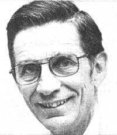

Selected doin's of well-known MOTHER-types from around the world.
The Doobie Brothers-both as individuals and as a musical group-express a refreshing enthusiasm for, and an involvement in, environmental and humanitarian issues.
The rock group's December 1978 benefit series of concerts netted $20,000 for the Children's Hospital at Stanford University, chipped in funds to the Solar-Cal project, and helped to keep alive the late Will Geer's lifelong dream of the Theatricum Botanicum: a non-profit actors' training center which gives free performances of Shakespeare's plays.
Plus, as this is written, the band is busy performing-along with other top name members of the Musicians United for Safe Energy-at Madison Square Garden to raise money for nonprofit antinuclear organizations. Indeed, it's to the benefit of all that the sincerity and honesty which the Doobie Brothers project on stage are continually confirmed in "real life".-DS.
Iowa's Sixth District Congressman Berkley Bedell recently introduced legislation that will [1] increase farm incomes, [2] add to our domestic supply of fuels, and [3] help get the government out of the commodity price support business!
Bedell's highly important bill-which was successfully reported out of the House Agriculture Committee in September-will go a long way toward establishing farmer's alcohol as one of this nation's most important energy sources, as well as providing a solution to the long-standing problem of farm surpluses. As Congressman Bedell notes: "National agricultural policy would be substantially transformed . . . from its present orientation toward paying farmers not to produce in order to raise prices, to paying them to produce as a means of increasing our domestic supply of liquid fuels."
Congressman Bedell-who was instrumental-along with New York's Mario Biaggi-in stimulating Congressional interest in MOTHER's alcohol fuel experiments) admits that his National Alcohol Fuel and Farm Commodity Act-H.R. 2153-is no panacea for our energy problems . . . but it does establish a foundation for a comprehensive alternative fuels strategy. And-in Bedell's words"It is do-able. It's not 'pie-in-the-sky' rhetoric. The proposal could be implemented tomorrow, at little or no cost to the taxpayer." Now that's what we need to hear from Washington! -PH.
Longtime readers of MOTHER may remember Art and Richard as the Sundance and Louie who designed the Blazing Showers stovepipe and firebox heat exchangers that produce hot water from wood stoves (MOTHER NO. 42, page 60).
Well, they're at it again . . . and this time, they've got some support in high places. Sussman and Frazier were recently awarded $12,500-under the DOE's Appropriate Energy Technology Grants program-for the development of an experimental stovepipe water heater with a bypass flue section.
Just a year ago, Art and Richard compiled their water-heating knowledge in a book-Handmade Hot Water Systems-that encourages energy independence by teaching folks how to design, build, and install their own wood, solar, or hybrid water heaters . . . for a saving of up to $250 a year in utility costs!
The book is available-for $4.95 plus 95 cents shipping and handling-from Garcia River Press (P.O. Box 527, Point Arena, Calif. 95468) or Mother's Bookshelf (P.O. Box 70, Hendersonville, N.C. 28739).
-Barbara Llanes.
"Coke's a natural," say the ads . . . but Peter F. Chokola disagrees. The Wilkes-Barre, Pennsylvania independent softdrink bottler sees the big Atlanta corporation's promotion of throwaway bottles and cans as both an environmental outrage and a monopolistic act . . . and Pete's hollering about it!
Up until the mid-60's, according to Chokola (who calls himself Coca-Cola's "number one public enemy"), the soft drink business was competitive: Bottlers in any given area were similar in size . . . and-since no one company dominated the market-prices were generally low. The extent of a local beverage company's territory was largely limited to the distance a truck could reach and still return-the same day-with a load of empty glass containers.
With the introduction of "one-way" containers, says Chokola, bottlers became distributors for centrally packaged-goods . . . and territory size was limited only by franchise agreements. The economic result of disposable cans and bottles (we all know the ecological result) was to reduce the number of companies needed to cover a given area, since it was no longer necessary to truck empties back to the plant. These fewer companies-well-financed-could drive smaller bottlers out of the area by price-cutting . . . and then (When they reached a monopoly position) the large firms could charge as much as they liked for their products.
Chokola claims that throwaways account for seven million tons of trash annually . . . and use 200 trillion precious Btu's while being manufactured and distributed. When you add the monopolistic pricing that the containers make possible for seven million tons of trash annually . . . and use 200 trillion precious Btu's while being msible, there doesn't seem to be any justification for them.' And Chokola-a champion of the small bottler-has a positive program for fighting the cans and plastic bottles: mandatory deposits on all beverage containers. And he advocates such legislation wherever he can find an audience . . . on talk shows, in congressional committees, and even at industrial forums.-PH.
E.F. Schumacher called Leopold Kohr "one of the few original thinkers of our time" and "a teacher from whom I have learned more than from anyone else". Ivan Illich confessed himself "embarrassed to find the values of smallness, multi-centeredness, and autonomous structuring-which our generation has been 'discovering'-had been just as clearly and much more humorously formulated by Kohr . . . before we understood what he was teaching".
Such comments constitute praise indeed! Yet how many of us have even heard the name of the man who-for the past 40 years-has been a leading apostle of making do with less (a phrase that's surely familiar to MOTHER's readers)?
Kohr's books-which warned of the dangers of bigness and offered decentralization as the answer to many of our political and economic problems-have been ignored and out of print far too long. But time has a way of (finally) catching up with ideas, and now Kohr's thoughts are once again available to inspire us all.
In The Breakdoum of Nations ($4.95 in paperback from E.P. Dutton) Kohr addresses the political consequences of bigness . . . the inevitability of conflict between the great powers . . . and the need for a "breakdown"-or splitting of large states into their smaller, traditionally tribal components-of nations.
This theory is expanded in a second work, The Overdeveloped Nations ($9.95 from Schocken Books), in which the author examines questions of economics and personal freedom. Kohr's purpose is serious, but his style is witty and clear. The two works are must reading for anyone who finds the MOTHER lifestyle appealing.-PH.
|
 |
|
|